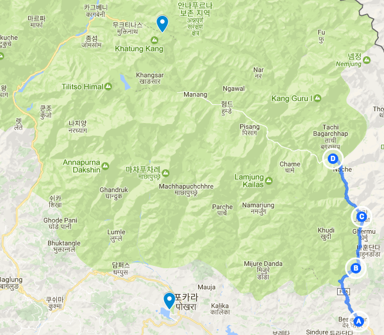
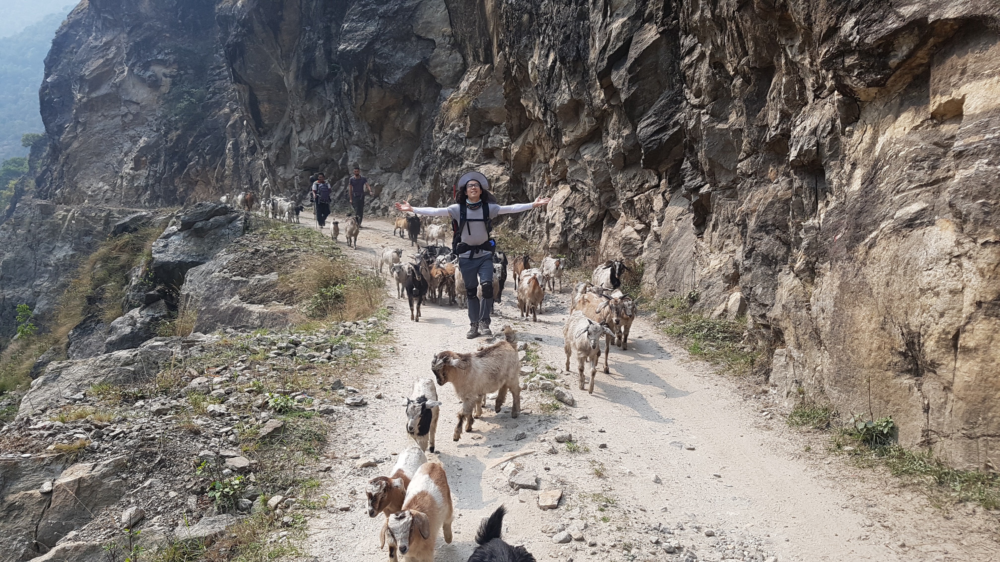
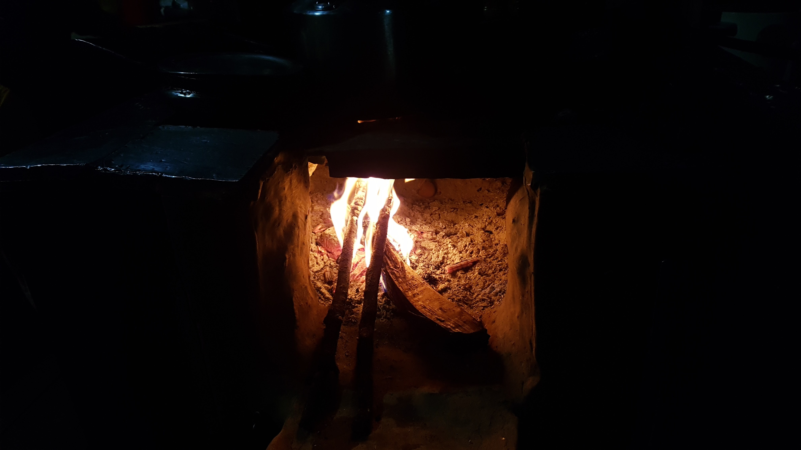

layout: post
title: 동행이 생기다
subtitle: "여행 D+11, 안나푸르나 D+3"
date: 2017-04-14 12:00:10
tags: 포스팅
header-img: img/post-travel-11.jpg
오늘 이동한 경로 (C) -> (D) (총 17km)
Jagat (1300m) -> Chamche (1385) -> tal (1700) -> karte (1870) -> dharapani (1900) ->> bagarchhap(2160)

동행이 생기다!
오늘은 어제보다 한시간 일찍 출발했다. 어제 같이 대화했던 친구들이 순차적으로 출발해서 내가 가장 마지막에 출발했다. 오늘 목적지는 다라파니이다. 몸이 허락하는한 충분히 갈 수 있는거리다. 트레킹 출발지였던 베시사하르에서 보통 다라파니까지 지프차를 타고 간다. 처음 만났던 한국인들도 나에게 다라파니 까지 같이 가지않겠냐고 제안했었다. 남들은 시작점인곳인데 나는 3일이나 걸려서 도착하는것이다. 내게 써킷트레킹 뽐뿌를 줬던 친구 Y의 트레킹 로그를 보면 그친구는 둘째날에 다라파니까지 도착했다. 정말 대단.. 내가 느린건지.. 나도 나름 산행에 자신있었는데 약간 조급해진다.
그래도 다라파니가 거의 2000m고지인데 시작부터 2000m부터 시작하면 고산에 적응할 시간이 부족하기 때문에 고산병에 걸리기 쉽다고 하니 내가 하는것이 잘하는것인지도 모른다. 나는 800m부터 시작하기 때문이다. 조금 더 빨리 가고 싶지만 도저히 그렇게 못하겠다. 숙소에 도착하면 피로가 많이 풀려서 괜찮은데 움직일때는 미쳐버릴것 같다.
오늘 아침 트레킹코스는 한 11시까지는 좋았다. 할만했다. 가는 길에 만났던 수많은 폭포들이 너무 환상적이었다. 쉬고싶을 때 잠깐 멈춰서 쉬고 멋진 장면을 만나면 또 잠깐 멈춰서 구경했다. 이러니 가는 시간이 조금 더 오래 걸리는지도 모르겠다.
오전에 걷는 내내 어제 대화나눴던 친구들을 마추첬다. 이렇게 한번 만났던 사람들 (친구가 된 사람들)과 즐겁게 마주치니 혼자걷는 길이지만 외롭지 않은것 같다. 그리고 그들과의 대화도 너무 즐겁다.
나는 이 산에 시계를 챙기지못했다. 밤에 잘때 자주 깨는데 시간을 보고 싶을때 바로 보기 어려워 불편하다. 하지만 걷는동안 이런생각이 들었다. 그래도 손목에 무게 하나를 줄이지 않았나? 난 항상 단점만 보고 있었던 것이다. 시계가 없으면 분명 한쪽 손목이 조금이라도 가벼워져서 트레킹에 아주 조금이라도 도움이 될 것이다. 굳이 밤에 시간확인이 필요한가? 시간에 쫒겨 아웅다웅하며 살지 않기로 했지 않나. 그냥 손목의 가벼움을 즐기자!
4년전 페루에서 마추픽추 트레킹에서도 탐험하는 느낌을 받아서 좋았다. 거대한 산속을 거닐때 마치 내가 탐험가가 되어 새로운 모험을 하는 기분이었다. 반지원정대 느낌. 이렇게 거대한 산을 지날때마다 그런 느낌이 든다. 탐험가 처럼 살자!
염소떼와 함께 트래킹을
가던 길에 염소떼를 만났다. 갑자기 절벽에서 우르르 내려왔다. 당시 로즈와 라미로 비샬과 같이 동행하고 있었다. 그러다가 갑자기 그 염소떼들도 우리와 같이 동행하게 된 것이다. 염소를 본적이 별로 없어서 그런지 모르겠지만 새끼 염소는 진짜 엄청나게 귀엽다. 그리고 사람손을 두려워하지도 않는다. 키우고 싶어질 정도다. 거의 1km는 같이 히말라야 산 언저리를 동행했다. 이렇게 예기치 못한 일들이 일어나는것은 언제나 즐겁다.
 나와 동행 해주었던 염소들과 함께
잠시 쉬다가 로즈와 라미로는 먼저 출발하고 헤어지게 되었다. 계속 쉬다가 갑자기 뒤에서 누가 인사를 했는데 마찬가지로 어제 같이 대화했던 패트릭과 그의 가이드 타쿠어 였다. 여기서 또 만나게 되니 무척 반가웠다. 그렇게 이들과 같이 걷게 되었다. 오늘은 혼자 걸은적이 거의 없었다. 계속 동행과 걷게 되었다. 아마도 앞으로의 여행 자체가 이럴것이다. 혼자여행하지만 절대 혼자만 있게되지 않는것이 혼자 여행하는것의 매력이다.
약간 도움이 되었던것은 나는 가이드를 고용한적이 없지만 어떨결에 나도 타쿠어의 가이드를 받게된것이다. 출발하기 전에는 가이드와 포터가 정말 필요없다고 생각했는데 막상 샛길등을 알려주는것을보니 필요해 보이기도 했다. 그래도 안나푸르나 트레킹에서는 굳이 가이드는 필요없는것 같다. 모르는 길이 나오면 주변을 지나는 트레커나 현지인에게 물어보면 되기 때문이다. 그리고 가는 길이 모두 같은 방향이기 때문에 그냥 이길이 맞냐고 물어보기만 하면 된다.
오늘 Tal이라는 마을을 거쳐서 가기로 했다. 거기서 점심을 먹으려고 했다. 그런데 Tal을 가려면 엄청난 내리막길을 내려가서 강을 건너야 한다. 거의 11시가 되어 점심시간이 되었지만 가이드 타쿠어가 그냥 강 건너지 말고 이길로 쭉가서 점심을 먹으면 어떻겠냐고 제안했다. 만약 나 혼자갔으면 분명 힘들게 Tal에 갔을것이다. 이렇게 가이드가 있으니 더 좋은 코스를 갈수 있게 되는것은 좋았다. Tal을 거치지 않으니 정말 많은 시간이 절약된것 같다. 그래도 가이드는 필요없다. 포터면 몰라도.
점심을 거의 12시반에 했는데 Tal이후 Karte로 가는 코스에서 나는 엄청 힘들었다. 패트릭도 힘들어해보였다. 그도 나와같이 13Kg의 짐을 메고 있다. 점심 달밧을 맛있게 먹은뒤 출발했다. 갑자기 이들이 다라파니보다 더 가려고 했다. 나는 약간 힘들것 같았다. 하지만 조금이라도 더 가야 전체 트레킹 시간이 절약될것 같기도 했다. 그래서 나도 따라 가기로 했다. 오늘의 목적지는 결국 바가찹이다.
진짜 힘들었다
Karte다음 다라파니로 가는길이 나는 너무 힘들었다. 결국 스틱도 꺼내서 사용했다. 가는 내내 나는 다라파니에서 묶겠다 너희들은 더가라 라고 말하고 싶었다. 그래도 스스로 채찍질하면 아니다. 할수 있다. 라고 되내이며 갔다. 곧 다라파니에 도착했을때 너무 기뻤다. 하지만 이 가이드는 너무 쉬질 않는다. 계속가는데 따라가기 너무 힘들다. 게다가 패트릭이 고용한 가이드이기 때문에 패트릭이 잠시 짐을 꺼내거나 멈추게되면 다들 따라 멈추지만 내가 잠시 멈춰야할 일이 생기면 이들은 멈추지 않고 계속간다. 당연한거다. 그 벌어진 간격이 생각보다 엄청 멀기 때문에 나는 계속 쫒아가야했다. 이게 제일 힘들었던것 같다. 남을 쫒아가는것은 언제나 힘들다. 내가 스스로 결정해야한다.
다라파니 이후 바가찹으로 가는 코스는 그야말로 죽음이었다. 가는내내 오늘 너무 오바해서 걸은것 아닌가 의구심을 가지며 걸었다. 그래서 더 힘들었던것 같기도 하다. 빨리 소모품 짐들을 없애버려야지 무게가 너무 나가서 무거워 죽겠다. 무릅이 고장날까봐 걱정되기도 하고.. 이들의 걷는 속도가 너무 빠르다. 쫒아가기 너무 힘들다. 내일은 나혼자 가면 어떨지 생각해본다. 그리고 이사람들 쉬느것도 너무 조금 쉬어서 내 페이스와 맞지 않은것 같다.
결국 바가찹에 도착했다. 바로 숙소로 들어갔다. 롯지에서 핫샤워가 가능하다고 했다. 실제로는 뜨거운물은 아니고 뜨적지근한 물이었다. 샤워를 마치고 빨래를 하니 너무 손이시렵고 추웠다. 게다가 비까지 내리기 시작했다. 엄청나게 온다. 오늘 빨래는 거의 마르지 않을것 같다.
 부엌에서 장작불 아궁이에 손을 녹였다. 오랫만에 보는 아궁이다. 장작불을 보고 있으면 기분이 너무 좋다.
오늘 무척 춥다. 잘때 추울것 같아서 이불을 빌렸다. 지난번 한겨울에 눈올때 북한산 산장에서 하루 잤었는데 그때 대비를 너무 안하고 와서 너무 추웠었다. 추워서 잠도 못자고 5분이 5년같은 밤을 보냈었다. 그 경험 때문에 이번엔 나름 잘때의 추위를 대비했다. 그래서 짐이 더 무겁기도 하다. 구스파카. 넥워머. 비니. 수면양말. 등등
오늘은 파카 빼고 모두 착용하고 누웠다.